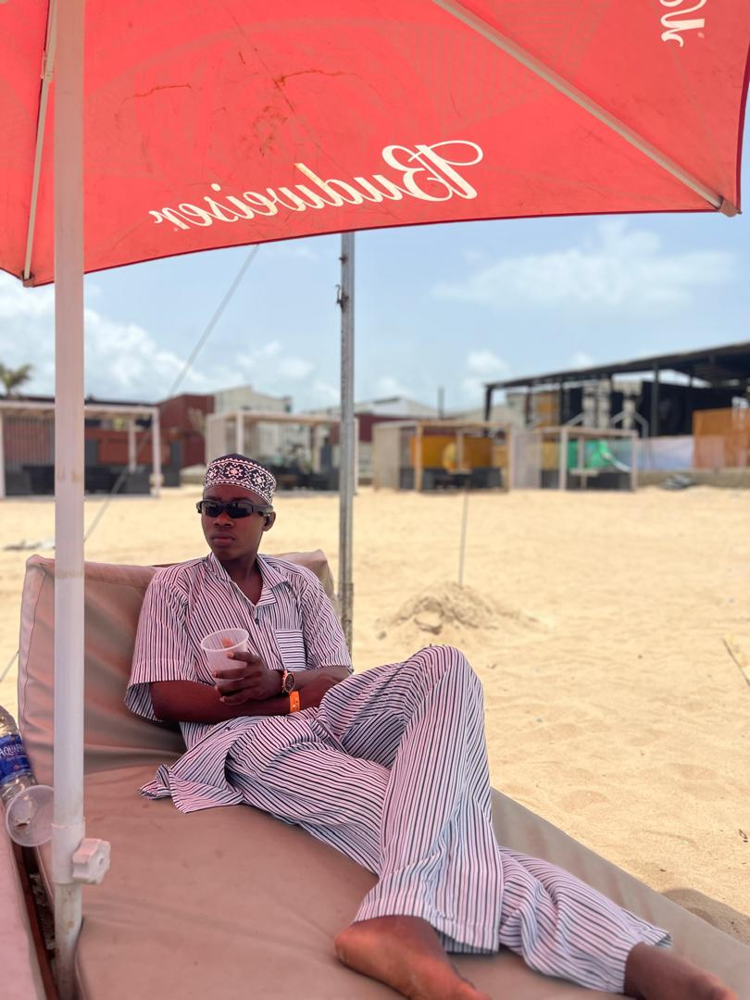

Abdulsalam Akorede | WDD 130

Hello! My name is Abdulsalam Akorede, and I'm from Nigeria.
I am a student at
BYU–Idaho,
where I am
studying Software Development.
I enjoy learning new technologies, building
projects, and
improving
my programming and web development skills.
In my free time, I like exploring new
ideas,
solving
problems, and working on personal projects that help me grow as a future software
developer.
I look
forward to using my skills to create useful and impactful solutions.